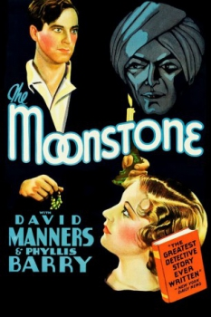

Country:United States, 62 minutes
Spoken languages:
Genres:Comedy, Mystery, Crime
Director(s):Reginald Barker
Writer(s):Wilkie Collins, Adele Buffington
Video Codec:Unknown
Number: 1766


Certification:NR
Storyline:
A valuable gem from India is stolen in an old dark mansion and it is up to Scotland Yard inspector Charles Irwin to find out who did it among all the suspects who were in the house.
Cast:
Medium: Original DVD,
Comments: Part of: Mystery Classics - 50 Movie Pack
Loaned: No
Aspect ratio: Unknown